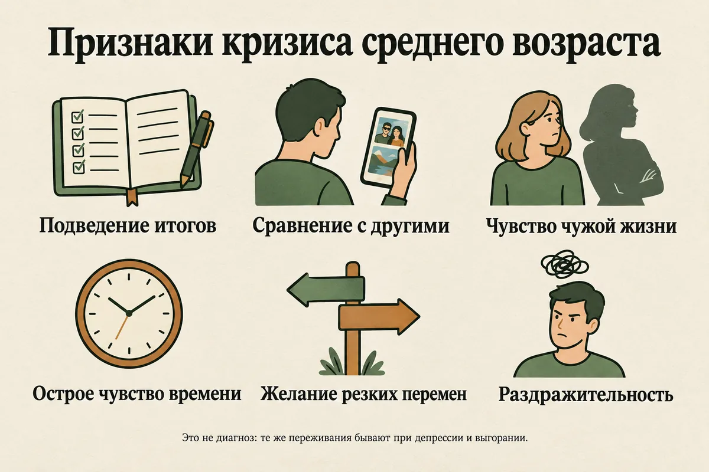
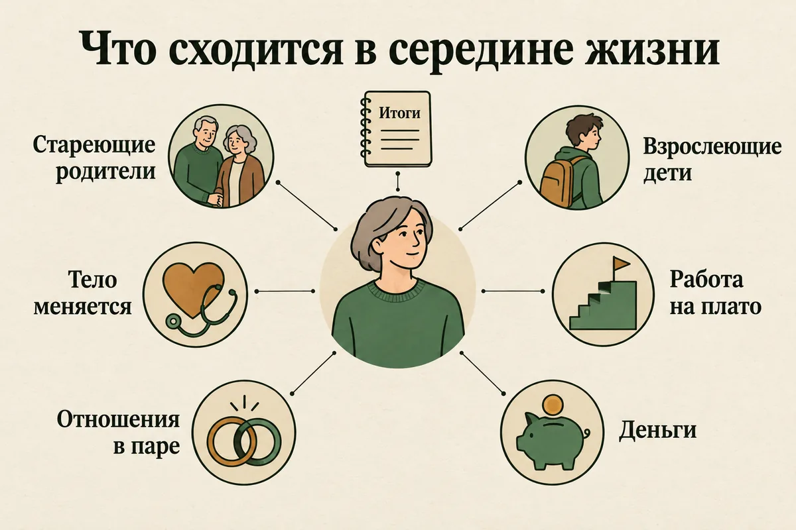
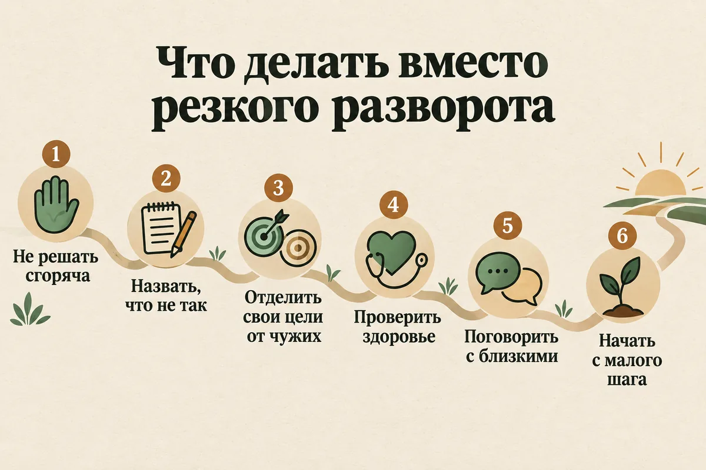
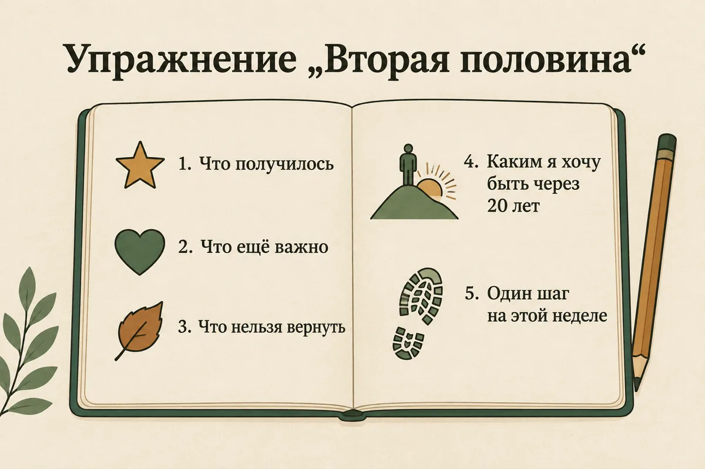

Главная → Блог → Кризис среднего возраста
Кризис среднего возраста: признаки, во сколько лет начинается и что делать
Обновлено: 24.09.2026 · 17 минут чтения
Вам за сорок, жизнь вроде бы сложилась — работа, семья, какие-то достижения, — а внутри всё чаще звучит: «И это всё? Так и будет до конца?» Кризис среднего возраста — это период, когда человек примерно в 40–55 лет начинает подводить итоги, остро чувствует, что времени осталось меньше, чем прожито, и пересматривает, так ли он живёт. Это не диагноз и не обязательный этап: по исследованиям, настоящий кризис переживают примерно 10–20% людей, а не все подряд. Ниже — как его узнать, чем он отличается от депрессии, как проходит у мужчин и у женщин и что помогает, если он у вас или у близкого.
- Что такое кризис среднего возраста простыми словами
- Во сколько лет начинается кризис среднего возраста
- Правда ли, что кризис среднего возраста бывает у всех
- Признаки кризиса среднего возраста
- Почему он возникает: что сходится в середине жизни
- Кризис среднего возраста у мужчин
- Кризис среднего возраста у женщин
- Кризис среднего возраста или депрессия?
- Кризис среднего возраста и брак: «хочу всё поменять»
- Сколько длится кризис среднего возраста
- Как пережить кризис среднего возраста: 8 шагов
- Упражнение «Вторая половина»
- Что делать не стоит
- Если кризис у мужа или жены
- Когда обращаться к психологу или врачу
- Частые вопросы
Что такое кризис среднего возраста простыми словами
Кризис среднего возраста — это период, когда человек в середине жизни оглядывается назад и впервые всерьёз сравнивает то, что получилось, с тем, чего он хотел. Одновременно меняется взгляд вперёд: время перестаёт казаться бесконечным, и появляется вопрос не «кем я стану», а «что я успею».
Термин придумал британский психоаналитик Эллиотт Жак в статье 1965 года «Смерть и кризис середины жизни». Он описывал, как люди около середины жизни сталкиваются с собственными ограничениями и с мыслью о том, что жизнь конечна, и как это меняет их работу и образ жизни. С тех пор выражение ушло в массовую культуру и обросло стереотипами: красная спортивная машина, молодая любовница, внезапное увольнение, мотоцикл и тату.
Важно понимать две вещи. Во-первых, это не диагноз: в МКБ-11 и DSM-5 такого расстройства нет. Это бытовое название для переживания, похожего на экзистенциальный кризис, только привязанного к возрасту и подведению итогов. Во-вторых, это не обязательно плохо: у многих людей переоценка середины жизни заканчивается не разрушением, а более осознанной второй половиной — с меньшим числом чужих целей и большим числом своих.
Во сколько лет начинается кризис среднего возраста
Точного возраста нет. Чаще всего о кризисе среднего возраста говорят в промежутке от 40 до 55 лет, но у одних он начинается в 35, у других — ближе к 60, а у многих не наступает вовсе. Поводом становится не дата в паспорте, а события: круглый юбилей, болезнь или смерть родителя, уход детей из дома, увольнение, болезнь ровесника, развод.
Есть и данные о том, когда люди в среднем чувствуют себя хуже всего. Экономист Дэвид Бланшфлауэр в работе 2021 года проанализировал опросы жителей 145 стран и нашёл так называемую U-кривую счастья: удовлетворённость жизнью снижается от молодости к середине жизни, достигает дна примерно к 50 годам и потом снова растёт. Он же отметил, что в Европе и США возраст этого «дна» со временем сдвигался вверх. Похожую кривую в 2012 году нашли даже у 508 человекообразных обезьян — шимпанзе и орангутанов, чьё благополучие оценивали знающие их смотрители.
Но у этих цифр есть оговорки, о которых популярные статьи обычно молчат, — о них в следующем разделе.
| Что обычно в центре | Частые поводы | |
|---|---|---|
| 35–40 лет | «Я выбрал ту профессию и ту жизнь?» | Карьерное плато, первые серьёзные проблемы со здоровьем, вопрос о детях |
| 40–50 лет | Подведение итогов, «что я успею» | Юбилей, стареющие родители, подростки дома, усталость в браке |
| 50–60 лет | Наследие и то, как прожить оставшееся | Дети уезжают, потеря родителей, менопауза, мысли о пенсии |
Правда ли, что кризис среднего возраста бывает у всех
Нет. Это, пожалуй, самый стойкий миф о середине жизни. В обзоре 2020 года в журнале American Psychologist исследователи возрастного развития прямо называют всеобщий кризис среднего возраста мифом: по данным опросов, настоящий кризис в этом возрасте переживают примерно 10–20% людей. Там же отмечен и обратный риск: когда кризис считают нормой, люди списывают на него проблемы с психическим и физическим здоровьем, которые на самом деле нужно лечить.
С U-кривой тоже не всё просто:
- Разница небольшая. Возрастные различия в удовлетворённости жизнью в таких опросах обычно невелики: «дно» — это немного ниже среднего, а не провал.
- Это снимок разных людей, а не одна жизнь. Большинство данных сравнивают разных людей разного возраста в одно время. В разборе 2020 года психологи показали, что долгосрочные наблюдения за одними и теми же людьми подтверждают U-кривую далеко не всегда, а пожилые люди, вспоминая прожитое, часто называют середину жизни одним из лучших периодов.
- Кривая меняется. В исследовании 2025 года тот же Бланшфлауэр с коллегами показал, что в США, Великобритании и по данным 44 стран за 2020–2025 годы привычного «горба» неблагополучия в середине жизни больше не видно: теперь хуже всего себя чувствуют молодые, а с возрастом становится лучше. Причина — ухудшение психического здоровья молодых людей.
Что из этого следует на практике: если вам за сорок и тяжело, это не «просто возраст, у всех так». Это конкретное состояние с конкретными причинами, и в нём стоит разобраться, а не пережидать.

Признаки кризиса среднего возраста
Признаки кризиса среднего возраста — это не симптомы болезни, а то, что люди в этом состоянии описывают чаще всего. По одному признаку ничего сказать нельзя: смотреть стоит на сочетание, на то, как долго оно держится, и на то, мешает ли жить.
- Постоянное подведение итогов. Мысли возвращаются к одному: чего я добился, что упустил, где свернул не туда.
- Сравнение с другими. Одноклассники, коллеги, друзья из соцсетей кажутся успешнее, свободнее, счастливее.
- Ощущение «чужой жизни». Работа, дом, привычный распорядок будто выбраны кем-то другим.
- Острое чувство времени. «Осталось меньше, чем прожито», «если не сейчас, то никогда».
- Скука и потеря вкуса к тому, что раньше радовало, — при этом тяга к новому может быть сильной.
- Тревога о теле и возрасте: морщины, вес, здоровье, сравнение себя с собой двадцатилетним.
- Желание резких перемен: уволиться, переехать, уйти из семьи, начать всё с нуля.
- Раздражительность к близким и к рутине, ощущение, что тебя не понимают.
- Сожаления о несделанном: не та профессия, не та страна, не тот выбор в молодости.
Если к этому списку добавляются подавленность почти каждый день, бессонница, потеря интереса вообще ко всему и чувство собственной никчёмности — это уже больше похоже на депрессию, и об этом отдельный раздел ниже.

Почему он возникает: что сходится в середине жизни
Кризис среднего возраста редко вызывает что-то одно. Обычно в одни и те же годы сходятся несколько перемен, и каждая по отдельности была бы переносимой, а вместе они выбивают из колеи. В обзоре о середине жизни её называют переломным периодом: человек одновременно отвечает за стареющих родителей, взрослеющих детей и собственную работу, и именно здесь накапливаются последствия прежних решений.
- Итоги и несбывшиеся планы. К сорока становится видно, какие мечты юности уже не сбудутся — не потому, что вы плохо старались, а потому, что жизнь одна и выборы исключают друг друга.
- Конечность жизни. Уходят родители, болеют ровесники, впервые приходит мысль о собственной смерти не как об абстракции. Об этой стороне подробнее — в статье про страх смерти.
- «Поколение-сэндвич». С одной стороны родители, которым нужна помощь, с другой — дети-подростки или взрослые дети, которым она тоже нужна. На себя не остаётся ни времени, ни сил.
- Тело. Меньше сил, хуже сон, новые диагнозы, менопауза у женщин. Тело перестаёт быть незаметным.
- Работа. Карьерное плато, когда расти дальше некуда, или страх, что молодые коллеги обгоняют. Иногда наоборот: достигнутая цель, после которой пусто.
- Отношения. Брак, в котором годами обсуждали только быт и детей, и вопрос, что будет, когда дети уедут.
- Деньги. Ипотека, кредиты, расходы на детей и родителей и тревога о том, на что жить в старости.

Кризис среднего возраста у мужчин
У мужчин кризис среднего возраста чаще выглядит как действие, а не как разговор о чувствах: резкие покупки, смена работы, спорт до изнеможения, роман на стороне, больше алкоголя. Это совпадает со стереотипом, но за внешним поведением обычно стоят те же вопросы — о смысле, итогах и времени.
Часто это объясняют «мужским климаксом», но это неточно. Как пишет Национальная служба здравоохранения Великобритании (NHS), у мужчин нет резкого гормонального спада, как у женщин в менопаузу: уровень тестостерона снижается постепенно, примерно на 1% в год начиная с 30–40 лет, и сам по себе вряд ли вызывает проблемы. Упадок сил, сниженное влечение и перепады настроения в этом возрасте гораздо чаще связаны со стрессом, депрессией, тревогой, проблемами на работе и в отношениях, деньгами, заботой о стареющих родителях, недосыпом, алкоголем и малоподвижностью. Настоящий дефицит тестостерона бывает, но это отдельное нечастое состояние, и его определяют анализом крови.
Отдельная сложность — мужчины реже обращаются за помощью и реже говорят о чувствах. Депрессия у них может выглядеть не как грусть, а как раздражительность, вспышки злости, уход в работу или в алкоголь. Если это про вас, пригодятся статьи о вспышках гнева и о том, как алкоголь связан с тревогой, а проверить, не стал ли алкоголь проблемой, можно тестом AUDIT.
Кризис среднего возраста у женщин
У женщин кризис среднего возраста часто совпадает по времени с перименопаузой, и поэтому все трудности этого периода любят списывать на гормоны. Это верно лишь отчасти. По данным ВОЗ, у большинства женщин менопауза наступает в 45–55 лет, а перименопауза — переходный период до неё — может длиться несколько лет и влиять не только на тело, но и на эмоциональное и психическое благополучие. Обзор 2026 года подтверждает, что в этот период повышается риск депрессии, и связывает это с колебаниями уровня эстрогенов.
Но в обзоре 2025 года о кризисе среднего возраста у женщин психиатры предупреждают: объяснять все эмоциональные трудности этого возраста менопаузой — упрощение. Рядом идут и другие перемены — работа, растущая самостоятельность, забота о родителях, отношения, культурные стереотипы о «женщине после сорока».
Что это значит на практике:
- Если вместе с тяжёлыми мыслями появились приливы, ночная потливость, сбитый цикл, бессонница — сходите к гинекологу. Симптомы перименопаузы, по данным ВОЗ, облегчают как гормональные, так и негормональные методы, и терпеть их «потому что возраст» не нужно.
- Если гормоны в порядке или лечение подобрано, а вопросы «так ли я живу» остаются — это уже тема для психолога, а не для гинеколога.
- Синдром «опустевшего гнезда» тоже в основном миф: в том же обзоре в American Psychologist отмечено, что предположения о неизбежной депрессии матерей после отъезда детей не подтвердились. Грусть бывает, но у многих это время становится свободнее.
Кризис среднего возраста или депрессия?
Главное отличие: при кризисе среднего возраста в центре вопросы — о выборе, итогах и том, как жить дальше, а при депрессии — стойко сниженное состояние, которое не зависит от того, о чём вы думаете. Одно может переходить в другое, и именно поэтому так опасно списывать всё на «возраст».
По МКБ-11 для депрессивного эпизода нужно, чтобы подавленное настроение или заметная потеря интереса держались большую часть дня, почти каждый день, не меньше двух недель, а рядом были и другие симптомы: нарушения сна и аппетита, упадок сил, трудности с концентрацией, чувство вины или никчёмности, безнадёжность, мысли о смерти. Диагноз по списку не ставят — оценивает специалист.
| Кризис среднего возраста | Депрессия | |
|---|---|---|
| В центре | Вопросы: так ли я живу, что успею | Состояние: стойко сниженное настроение или потеря интереса |
| Желания | Часто сильная тяга к переменам и новому | Не хочется почти ничего, даже того, что радовало |
| Тело | Может плохо спаться от мыслей | Стойко нарушены сон, аппетит, силы |
| Самооценка | Недовольство тем, что получилось | Чувство собственной никчёмности и вины |
| Будущее | «Надо успеть что-то изменить» | «Ничего уже не изменится» |
| Что делать | Переоценка, разговоры, маленькие перемены; психолог, если застряли | Обратиться к врачу: депрессия лечится |
Если вы узнаёте себя в правой колонке, пройдите тест на депрессию PHQ-9 — он не ставит диагноз, но помогает понять, насколько выражены симптомы. Подробно о признаках — в статье о депрессии. Если же главное чувство — пустота на работе и нет сил ни на что, проверьте, не выгорание ли это: пройдите тест на выгорание.

Кризис среднего возраста и брак: «хочу всё поменять»
Кризис среднего возраста не обязательно ведёт к разводу или измене, хотя именно так его чаще всего изображают. Но на отношения он давит сильно: партнёр оказывается ближайшей частью той жизни, которую человек сейчас пересматривает, и под подозрение попадает первым.
Что обычно происходит:
- Брак становится «виноватым» во всём. Кажется, что если уйти, вернутся молодость, лёгкость и смысл. Иногда это правда, но часто человек уносит те же вопросы с собой в новую жизнь.
- Влюблённость как доказательство, что жизнь не кончилась. Роман в этом возрасте нередко больше про себя, чем про другого человека: «я ещё могу нравиться, чувствовать, начинать».
- Годы разговоров только о быте. Когда дети подрастают, выясняется, что пара давно не говорила ни о чём, кроме расписаний и денег.
Если вы думаете об уходе, дайте себе время и проверьте решение вопросом: «Я ухожу к чему-то или от чего-то?» Уйти от пустоты не получится, её придётся разбирать в любом случае. Иногда разговор с семейным психологом за три-четыре встречи проясняет больше, чем год молчаливого раздражения. А если решение принято и пара расстаётся, пригодится статья о том, как пережить расставание.
Сколько длится кризис среднего возраста
Единого срока нет: у одних переоценка занимает несколько месяцев, у других растягивается на пару лет и идёт волнами, обостряясь после значимых событий. Научных данных о длительности почти нет: кризис среднего возраста не диагноз, и даже в работе 2025 года, где предложили опросник для его измерения, авторы отмечают, что прежние оценки его распространённости брали из общих опросов о благополучии, а не из специальных методик.
Ориентир другой. Кризис идёт в нужную сторону, если со временем вопросы становятся конкретнее, а решения — спокойнее. Если же становится не легче, а тяжелее, и состояние мешает работать, спать и общаться, стоит показаться специалисту.
Как пережить кризис среднего возраста: 8 шагов
Кризис среднего возраста проходит легче, когда его используют как повод для пересмотра, а не как сигнал всё разрушить. Эти шаги не обязательно выполнять по порядку, но начинать лучше с первого.
- Не принимайте необратимых решений на пике чувств. Уволиться, продать квартиру, уйти из семьи — всё это можно сделать и через три месяца, если решение не изменится. Правило простое: крупное решение откладывается на срок, за который пройдёт хотя бы одна волна эмоций.
- Назовите, что именно не так. «Всё не так» — не решаемая задача. «Мне скучно на работе», «я устал быть для всех опорой», «я боюсь стареть» — решаемые. Запишите три-пять конкретных фраз.
- Отделите чужие цели от своих. Многие к сорока обнаруживают, что жили по сценарию родителей, партнёра или общества. Спросите себя про каждую цель: «Я бы этого хотел, если бы никто не узнал?»
- Посчитайте, сколько у вас времени, — честно. В 45 лет впереди может быть ещё 20–25 лет активной жизни. Это больше, чем прошло между 20 и 40. Мысль «поздно» чаще всего неверна.
- Начните с маленьких перемен. Не сменить профессию, а пройти один курс. Не переехать, а съездить туда на месяц. Не уйти из семьи, а начать честно говорить. Маленький шаг проверяет, нужна ли вам большая перемена.
- Позаботьтесь о теле. Сон, движение, проверка здоровья: давление, гормоны, щитовидная железа, у женщин — консультация гинеколога. Часть «кризиса» бывает недосыпом, анемией или перименопаузой.
- Поговорите с ровесниками. Выяснится, что вопросы «так ли я живу» задают себе многие, просто молча. Это снимает стыд и одиночество.
- Сократите алкоголь. В этом возрасте он часто становится способом «выключить» мысли по вечерам — и одновременно ухудшает сон, настроение и тревогу на следующий день.

Если хочется проговорить, что происходит. С ровесниками об этом говорить неловко, с партнёром — страшно. Можно начать с чата: описать, что именно не так, и вместе разобрать, где ваши цели, а где чужие. Анонимно, без регистрации и в любое время.
Начать разговорУпражнение «Вторая половина»
Это упражнение помогает перевести расплывчатое «жизнь проходит мимо» в конкретный план. Оно опирается на работу с ценностями, которую используют в терапии принятия и ответственности. Понадобится лист бумаги и полчаса без телефона.
- Что получилось. Запишите пять вещей в своей жизни, которые вы сделали и которыми, если честно, довольны. Не только достижения: вырастить ребёнка, пережить трудный год, остаться человеком — тоже считается.
- Что не получилось — и что из этого ещё важно. Запишите несбывшееся. Потом вычеркните то, что было важно тогда, но уже не важно сейчас. Оставшееся — ваш настоящий список.
- Что нельзя вернуть. Отдельно отметьте то, что уже невозможно: например, стать профессиональным спортсменом. Это можно оплакать. Сожаление — нормальная часть середины жизни, а не признак поражения.
- Каким я хочу быть в 60 или 70. Опишите один обычный день себя через 20 лет: с кем вы, чем заняты, что умеете, как себя чувствуете.
- Один шаг на этой неделе. Выберите из пунктов 2 и 4 одно направление и одно действие, которое займёт не больше часа. Сделайте его до воскресенья.

Что делать не стоит
- Рушить всё сразу. Уйти с работы, из семьи и из города одновременно — значит остаться без опоры в самый уязвимый момент.
- Пытаться вернуть двадцать лет. Спорт, новый гардероб и путешествия — хорошо, если это ради себя. Плохо, если это попытка доказать, что вы не стареете: такая гонка обычно проигрывается и оставляет ещё больше разочарования.
- Молчать и терпеть. «Пройдёт само» иногда срабатывает, но чаще молчание превращается в раздражение на близких или в депрессию.
- Заливать вопросы алкоголем. Бокал вечером, чтобы «отпустило», быстро становится привычкой — и мешает разобраться, что на самом деле не так.
- Бесконечно сравнивать себя с другими. Соцсети показывают чужие лучшие моменты, а не чужую середину жизни. Если лента вызывает только горечь, сократите время в ней.
- Списывать всё на возраст. «Мне просто за сорок» — удобное объяснение, из-за которого люди годами не лечат депрессию, тревогу и гормональные нарушения.
Если кризис у мужа или жены
Если у партнёра кризис среднего возраста, ваша задача — не спасти его и не переждать молча, а сохранить контакт и при этом не потерять себя. Это трудно: вы видите, как близкий человек отдаляется, раздражается и, возможно, ставит под вопрос ваш общий быт.
- Спрашивайте, а не угадывайте. «Мне кажется, тебе сейчас тяжело. Что тебя больше всего беспокоит?» работает лучше, чем «что с тобой опять?».
- Не принимайте всё на свой счёт. Недовольство жизнью часто обращается на ближайшего человека, но причина обычно не в вас.
- Поддерживайте безопасные перемены. Новое хобби, курс, спорт, поездка — хороший способ попробовать новое, ничего не разрушая. Иногда это можно делать вместе.
- Обозначайте границы. Понимание не значит терпеть всё: ложь, унижение, пьянство и угрозы — не «кризис», а поведение, у которого есть последствия. Об этом — статья про личные границы.
- Замечайте тревожные сигналы. Если партнёр перестал спать, много пьёт, говорит, что всё бессмысленно или что без него всем будет лучше, мягко предложите обратиться к врачу. При угрозе жизни звоните 112.
- Позаботьтесь о себе. Жить рядом с человеком в кризисе тяжело. Вам тоже можно пойти к психологу — одному, без партнёра.
Когда обращаться к психологу или врачу
Кризис среднего возраста многие проходят сами. Но есть ситуации, когда откладывать не стоит:
- подавленность или безразличие держатся почти каждый день две недели и дольше;
- нарушены сон и аппетит, нет сил на привычные дела;
- вы больше пьёте или замечаете, что без алкоголя не можете расслабиться;
- появилась постоянная тревога, панические атаки, мысли, от которых не получается отвлечься;
- вы на грани резкого решения — развода, увольнения, переезда — и не уверены, что оно ваше;
- у женщин — приливы, ночная потливость, сбитый цикл вместе с перепадами настроения;
- появились мысли о смерти или о том, что жить не стоит, — в этом случае помощь нужна сегодня.
С вопросами переоценки жизни и отношений работают психологи и психотерапевты, в том числе семейные. При признаках депрессии или тревожного расстройства нужен психиатр или психотерапевт с медицинским образованием: он может назначить лечение. При телесных симптомах — терапевт, эндокринолог, у женщин — гинеколог. Бесплатно в России можно обратиться в психоневрологический диспансер по месту жительства и в региональные центры психологической помощи; подробнее — в справочнике бесплатной помощи.
Статья носит просветительский характер и не заменяет консультацию специалиста. Если вам прямо сейчас невыносимо тяжело или появляются мысли о том, чтобы причинить себе вред, позвоните: 112 — при угрозе жизни; +7 (495) 989-50-50 — круглосуточная линия ЦЭПП МЧС России; 8-800-2000-122 (с мобильного — 124) — детям, подросткам и их родителям; 051 (с мобильного 8 (495) 051) — для Москвы. Куда ещё можно обратиться бесплатно — в справочнике помощи.
Частые вопросы
Во сколько лет начинается кризис среднего возраста?
Точного возраста нет. Чаще всего о нём говорят в промежутке от 40 до 55 лет, но у одних он начинается в 35, у других ближе к 60, а у многих не наступает вовсе. В международных опросах удовлетворённость жизнью в среднем ниже всего примерно к 50 годам, но это небольшая разница, а не обязательный провал.
Бывает ли кризис среднего возраста у всех?
Нет. По данным исследований, настоящий кризис в середине жизни переживают примерно 10–20% людей. У остальных этот период проходит без слома, а многие пожилые люди вспоминают середину жизни как одно из лучших своих времён. Если вам тяжело, это не «просто возраст», и в причинах стоит разобраться.
Как проявляется кризис среднего возраста у мужчин?
Чаще через действия, чем через слова: резкая смена работы, крупные покупки, спорт до изнеможения, роман на стороне, больше алкоголя, раздражительность. За этим обычно стоят вопросы об итогах и времени. «Мужской климакс» — неточное название: тестостерон снижается постепенно, примерно на 1% в год, и упадок сил в этом возрасте чаще связан со стрессом, депрессией, недосыпом и образом жизни.
Как проявляется кризис среднего возраста у женщин?
Часто как пересмотр ролей — матери, жены, работницы — и вопрос «а где в этом я». По времени он нередко совпадает с перименопаузой, которая может влиять на настроение и сон, поэтому при приливах, сбитом цикле и бессоннице стоит сходить к гинекологу. Но сводить все трудности этого возраста к гормонам — упрощение: рядом идут перемены в работе, отношениях и семье.
Сколько длится кризис среднего возраста?
Единого срока нет: у одних переоценка занимает несколько месяцев, у других растягивается на пару лет и идёт волнами. Научных данных о длительности почти нет, потому что это не диагноз. Если со временем становится не легче, а тяжелее, и состояние мешает работать, спать и общаться, стоит показаться специалисту.
Как отличить кризис среднего возраста от депрессии?
При кризисе в центре вопросы — так ли я живу, что успею, — и часто есть сильная тяга к переменам. При депрессии, по МКБ-11, не меньше двух недель почти каждый день держатся подавленное настроение или потеря интереса, а рядом бывают нарушения сна и аппетита, упадок сил, чувство вины и безнадёжность. Эти состояния могут сочетаться, поэтому при сомнениях лучше обратиться к врачу.
Что делать, если у мужа кризис среднего возраста?
Сохранять контакт: спрашивать, что его беспокоит, а не угадывать, и не принимать его раздражение целиком на свой счёт. Поддерживать безопасные перемены — хобби, спорт, поездки — и при этом обозначать границы: ложь, пьянство и унижения не оправдываются кризисом. Если он много пьёт, не спит или говорит, что всё бессмысленно, мягко предложите обратиться к врачу, а себе — поддержку психолога.
Можно ли пережить кризис среднего возраста без психолога?
Часто да: многие проходят его сами, особенно если есть с кем поговорить и есть силы на маленькие перемены. Помогают отказ от резких решений, пересмотр своих целей, забота о теле и честные разговоры с близкими. Но если появились признаки депрессии, проблемы с алкоголем или мысли о смерти, ждать не стоит.
Как подготовлен материал. Текст подготовлен редакцией AI Therapist на основе обзоров и исследований возрастной психологии, данных международных опросов о благополучии и материалов для пациентов. Данные о распространённости кризиса среднего возраста, U-кривой благополучия и её критике, о перименопаузе и о возрастном снижении тестостерона приводятся по рецензируемым публикациям, ВОЗ и NHS, ссылки на первоисточники стоят прямо в тексте; критерии депрессии — по МКБ-11. Кризис среднего возраста не является диагнозом. Статья носит просветительский характер, не является медицинской рекомендацией и не заменяет консультацию специалиста — диагноз ставит и лечение назначает врач.
Источники: Jaques E. «Death and the mid-life crisis», International Journal of Psychoanalysis, 1965, Infurna F. J., Gerstorf D., Lachman M. E. «Midlife in the 2020s: Opportunities and challenges», American Psychologist, 2020, Blanchflower D. G. «Is happiness U-shaped everywhere? Age and subjective well-being in 145 countries», Journal of Population Economics, 2021, Blanchflower D. G., Bryson A., Xu X. «The declining mental health of the young and the global disappearance of the unhappiness hump shape in age», PLoS One, 2025, Galambos N. L. et al. «The U Shape of Happiness Across the Life Course: Expanding the Discussion», Perspectives on Psychological Science, 2020, Weiss A. et al. «Evidence for a midlife crisis in great apes consistent with the U-shape in human well-being», PNAS, 2012, Mrugalska A., Klimkiewicz A. «Midlife Crisis in Women — Specificity and Challenges: A Narrative Literature Review», Journal of Mid-life Health, 2025, Nathan M. D. et al. «The Impact of Estradiol Dynamics During the Menopause Transition on Depression Risk», Biological Psychiatry, 2026, Husain W. et al. «Development and validation of the concise midlife crisis measure», Scientific Reports, 2025, NHS — The «male menopause», ВОЗ — Менопауза, ВОЗ — Депрессивное расстройство. Источники проверены 24.09.2026.
Кто отвечает за содержание сайта и по каким правилам мы готовим материалы — на странице о проекте.
Читать также
- Экзистенциальный кризис — если вопрос «зачем всё это» не связан с возрастом.
- Депрессия: 10 признаков, что делать и когда идти к врачу — если к итогам добавились подавленность, бессонница и упадок сил.
- Эмоциональное выгорание — если пустота выросла из работы на износ.
- Страх смерти: почему возникает и что делать — если в центре мысль о конечности жизни.
- Как пережить расставание — если кризис закончился разрывом.
- Терапия принятия и ответственности — подход, который работает с ценностями.